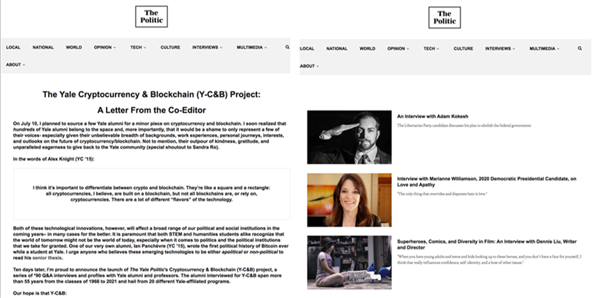
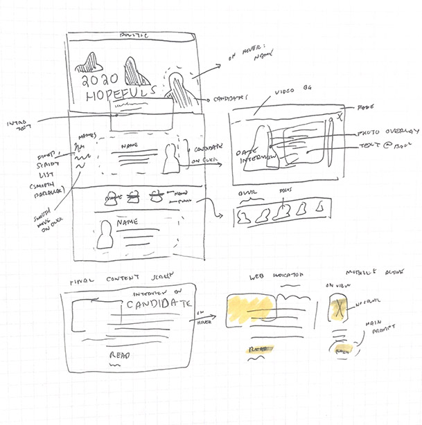
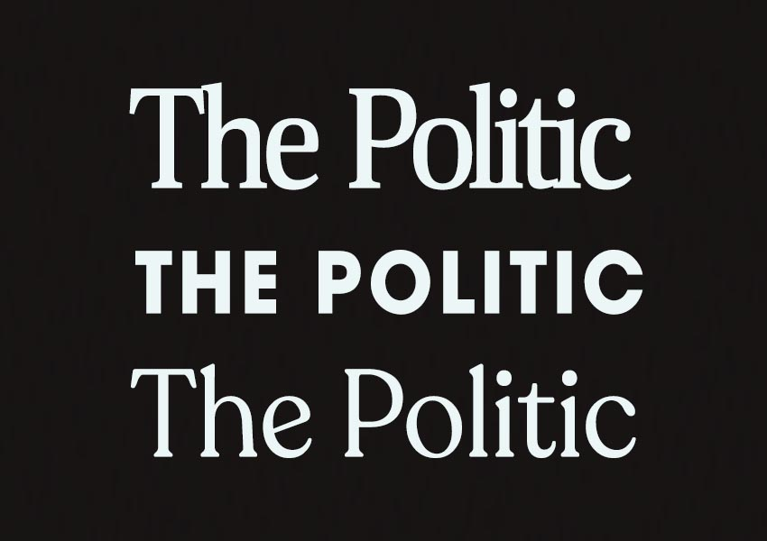
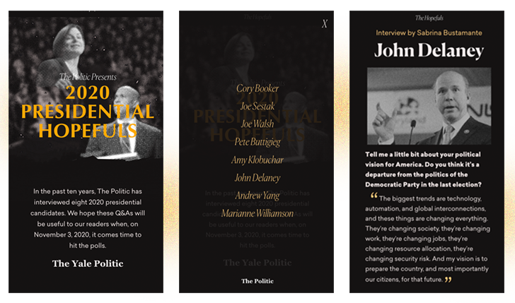
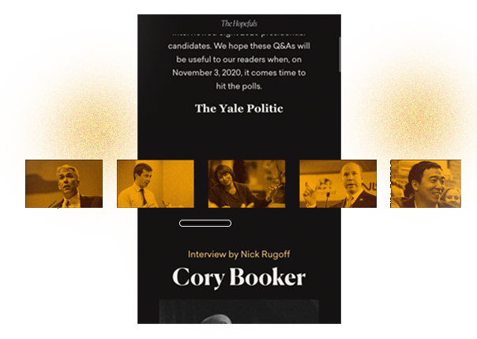
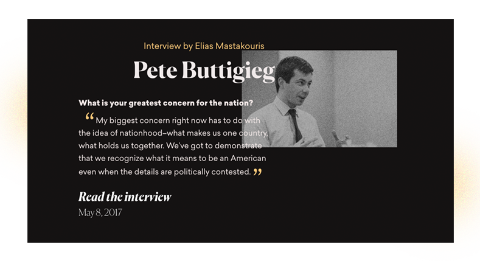

Highlighting candidates for the US 2020 elections through a minisite for the Yale Politic
Leading a tech team, we worked to deploy a minisite and framework for features and specials at the Yale Politic.
As the Technology Director for the Yale Politic, Yale's political publication since 1947, I set out to bring to life a series of interviews done over the past decade in preparation for the Presidential Elections through a minisite.
I was given a prompt to find a way to present and highlight this collection of selected interviews that the publication had done in the past years. With my team of two technology associates, we proposed a minisite to present the interviews.
Before the minisite, most Politic specials were only highlighted in compilation posts and served identically to the rest of the content on the website. With the minisite, we wanted to also establish a framework for features and specials for the rest of the Politic's work.
Because we're still in the process of better archival and presentation for the website's articles, another goal I wanted to set was converting a feature page to readership for the site—and more exploration of the website' materials/content.
Thus, I established goals that involved 1.) onboarding the two technology associates, 2.) building a framework for future projects, and 3.) using the page to generate more reads for the Politic's interviews and political materials.
We worked across two weekends to craft the minisite. I took on the role of also guiding the two new technology associates about the general overview of the development process — which proved valuable even for a "mini" project; covering the importance of prototyping, introducing the fundamentals of web development, and version control. We successfully aligned ourselves and worked through the development process.
 After establishing the look of the website, we built the base of the websites and continued to add visual components. We went through various iterations in deciding how to best visualize the eight candidates that were featured.
Because most of the Politic's readership is on mobile, we engineered the product with a mobile-first mindset. Considerations we had were ensuring that candidate information would ideally occupy the entirety of the screen height, and clarity on click-throughs to the articles themselves. For example, we let the candidate name and photos also direct to the article.
Visually, we wanted to make it clear that there were an assortment of nominees that the Politic had content for. This is part of why we wanted to make the figures in the landing graphic blurred and out-of-focus.
We decided to incorporate two methods in which users could view all candidates: a menu with candidate names especially for mobile that would scroll the user down, and a visual selection of the candidates below the introduction text.
Because we were working with interviews that were years old, we wanted to be conscious about the selected excerpts on the page. We had chosen snippets and worked with the main editorial team on best practices and choices for the articles.